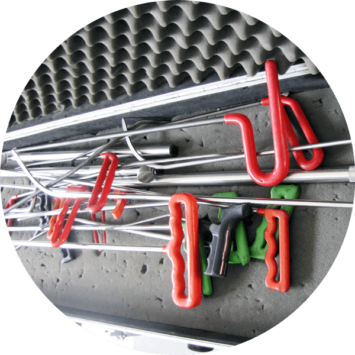
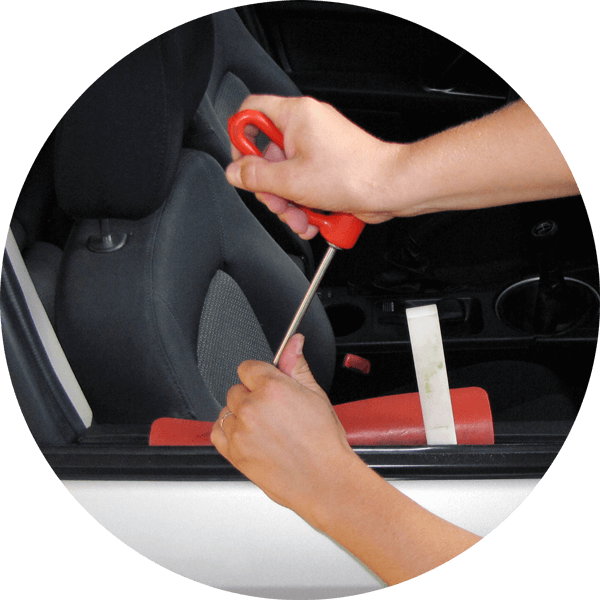
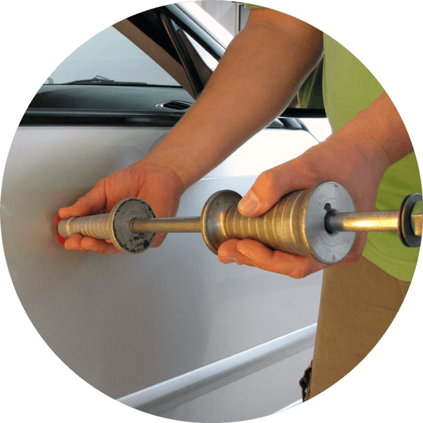
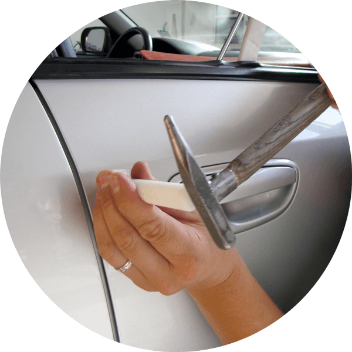
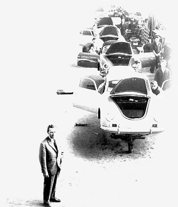

Tajemství metody PDR
Již žádné broušení, kytování a lakování. Existuje efektivnější a modernější způsob opravy. Objevte kouzlo revoluční opravy karoserie, promáčklin a důlků bez lakování. Přivítejte PDR.
Paintless Dent Repair
Slyšeli jste o zkratce PDR nebo opravě metodou PDR, ale nevíte co si představit? Nebudeme vás napínat. Jedná se o moderní opravu karoserie bez nutnosti lakování.
Metoda PDR představuje mechanickou opravu promáčklin
a důlků za studena, přímo na voze a bez nutnosti lakování s využitím speciálních nástrojů a postupů. Tato metoda ve světě není žádnou novinkou. Používá se již několik desítek let. V roce 2003 vstoupilo PDR do širšího povědomí
také v České republice společně se sérií velkých krupobití, které poškodili v Praze na tisíce automobilů.
PDR používají nejen zahraniční opravci automobilů, ale také samotné automobilky a dealeři vozů. Technologie PDR je v mnoha ohledech revolučním přístupem, který přináší celou řadu výhod i značné úspory. Zaslouží si jistě vaši pozornost.
Kdy se používá PDR?
- Důlky po krupobití
- Promáčkliny z parkovišť
- Promáčkliny z běžného provozu
- Pády ledu nebo sněhu ze střech
- Lehké dopravní nehody
- Deformace od vandalů
Tradiční oprava? Minulost!
Tradiční oprava promáčklin v autoservisu spočívá ve velmi radikálním zásahu do karoserie. Provádí se demontáž, broušení, navařování, kytování a lakování.
Tím dochází k nevratnému narušení originální karoserie
a jejích ochranný úprav (např. poškození anti-korozní úpravy). Povrch karoserie není již tak kvalitní a dochází ke ztrátě záruky na karoserii od výrobce. Dalším rizikem je postupné stárnutí nové barvy, které se může projevit
rozdílným odstínem originálního laku. Vůz tradiční opravou ztrácí vždy na hodnotě. Oprava karoserie může poté trvat v řádu týdnů a často je až o 60 % nákladnější než revoluční PDR.
Opravy po krupobití? PDR!
Metoda PDR se velmi rychle stala preferovaným způsobem opravy po kroupách a krupobití pojišťovnami po celém světě. Jedná se o nejefektivnější způsob opravy desítek i stovek důlků v naprosto rekordním čase, který šetří pojišťovnám a řidičům čas i finance. Nespornou výhodou je, že vůz opravou neztrácí na hodnotě. Neodepisujte ještě váš vůz. Vyzkoušejte PDR.
I PDR má své limity
Profesionální PDR technik dokáže v krátkém čase překvapivé zázraky. Přesto i PDR má své limity. Velmi omezené použití má metoda PDR na hlinikových dílech karoserie a využít ji nelze na plastové díly. A pokud došlo i k praskutní laku? Pomocí PDR se požkození vyrovná a připraví pro nové nalakování dílu.
- Nové nebo zachovalé automobily (r.v. 1990 a více)
- Lak v místě není porušený nebo prasklý
- Poškozené místo nebylo dříve opravováno
- Nelze použít na hliníkové nebo plastové díly
Metoda PDR již také v ČR
Pro svou rychlost, šetrnost, kvalitu i nízké náklady metodu PDR celosvětově používají pro opravy karoserie automobilky, autosalony i autoservisy. Vyhledávají ji také pojišťovny, leasingové společnosti, korporátní flotily i samotní řidiči. PDR představuje moderní opravu karoserie 21. století.
10 výhod PDR
- Rychlá oprava karoserie bez poškození laku
- Nejefektivnější způsob opravy po kroupách
- Až o 60 % nižší cena za opravu
- 100% odstranění škody do původního stavu
- Zachování původního laku a barvy
- Vůz opravou neztrácí na hodnotě ani záruce
- Metodu PDR vyžadují pojišťovny
- Ekologická oprava bez tmelení, broušení a lakování
- 100% estetický výsledek i záruka kvality
- Doživotní záruka na opravu PDR
Technologie opravy
Speciální nářadí
Základem kvalitní opravy je dlouholetá praxe, zkušenosti i specializované vybavení. Různé sady ocelových pák, protisměrná kladiva, ale i speciální lampy pro práci s reflexí a geometrií.

Vytlačování
Promáčklina je opatrně vytlačována, pomocí speciálního nářadí z ušlechtilé oceli z vnitřní strany karoserie. Karoserie i lak jsou pružné, nedochází tak k žádnému požkození laku.

Vytahování a lepení
U větších nebo špatně přístupných promáčklin se používá technika vytažení. Nanáší se lepící body, které nezanechávájí stopy a promáčklina se vytahuje protisměrným kladivem.

Vyrovnávání
Korekční tužka jemně rozklepává okolí promáčkliny. Aktivuje se tzv. paměťový efekt plechu. Poškození se tvaruje a vrací do své původní polohy. Jedná se o nejnáročnější fázi opravy.
Věděli jste, že...
Technologie PDR byla poprvé použita ve 40. letech 20. století, kdy výrobci Mercedes Benz a BMW hledali efektivní způsob opravy poškozených karosérií ve výrobě. S postupným zdokonalováním výroby automobilů upadala metoda PDR v zapomnění. V 80. letech však znovuobjevili potenciál opravy američtí dealeři vozů a PDR se postupně zdokonalovalo až do dnešní podoby, kdy představuje velice žádanou alternativu ke klasickým způsobům opravy karoserie.